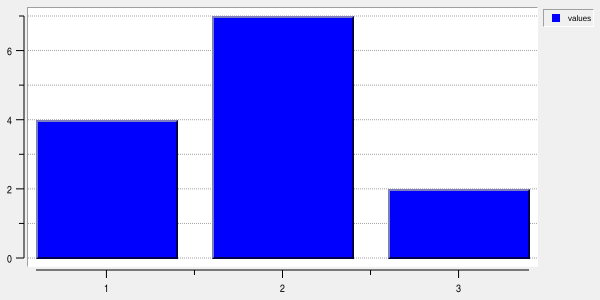
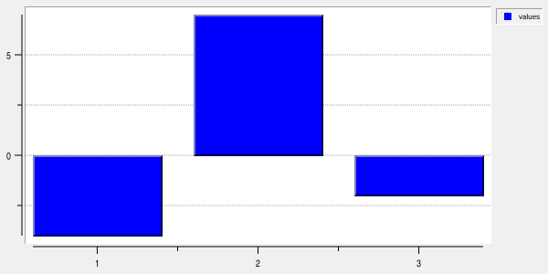
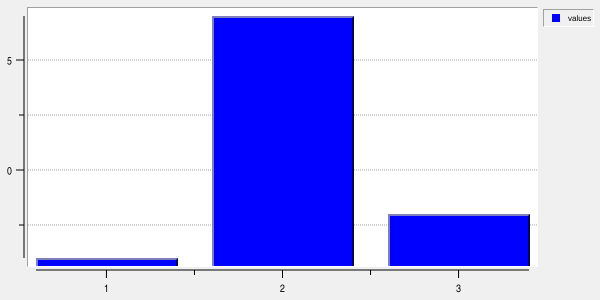
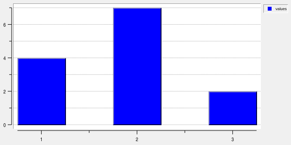
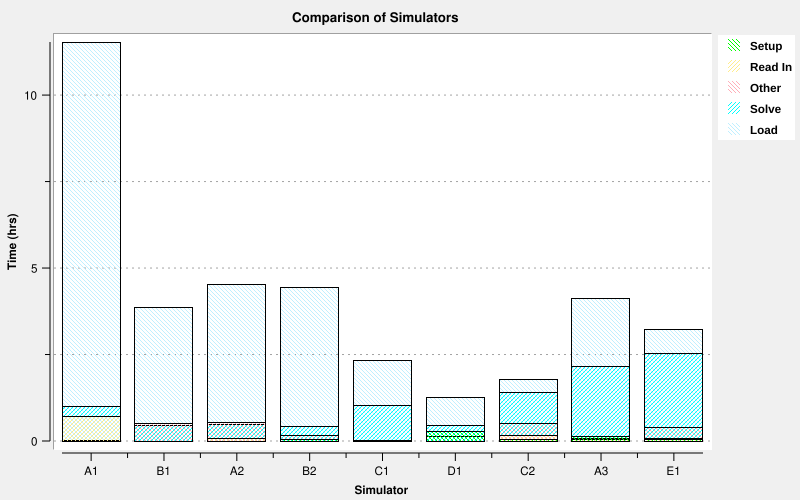
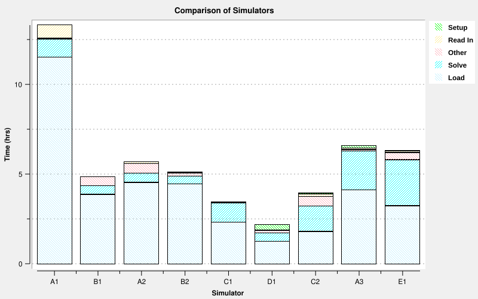
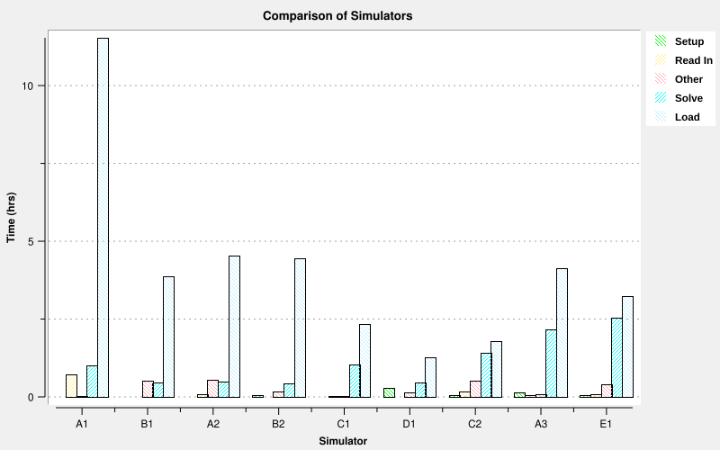
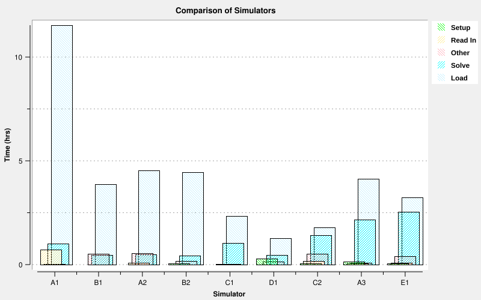
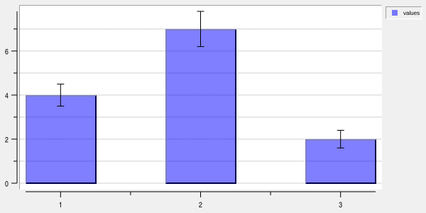
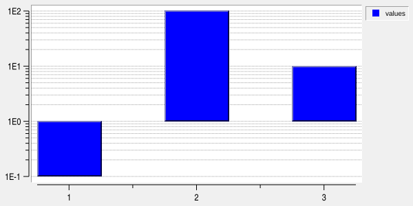

Bar element BARELEMENT options
This page documents the configuration and behavior of bar elements.
BARELEMENT denotes an element whose concrete type is BarElement. Bar elements are the default element
type of a barchart widget:
barchart .b
.b element create values
A bar element may also be created explicitly in any graph widget:
.g bar create values
The common element operations such as create, configure, activate, closest, bind, and delete are
documented in ELEMENT.
With -renderer cairo, solid/stippled bar fills and error bars use Cairo, including active bars and named
pens. Integer rectangle edges and stipple pixels stay sharp; -antialias applies to error strokes. Bar
layout, clipping, color defaults, and stipple origin are preserved. Tk relief borders and value labels retain
native rendering.
Bars in ::rbc::TRACKGRAPH require -track name and a -mapy axis owned by that track.
Tracks can independently select their bar mode; grouping and stacking remain separated by mapped axes.
See Bars in tracks.
Data
X and Y coordinates may be supplied separately with -x and -y:
.b element create values -x {1 2 3 4} -y {10 15 8 20}
-xdata and -ydata are synonyms for -x and -y.
Each coordinate option may also name an existing Rbc vector:
vector create xValues yValues
xValues set {1 2 3 4}
yValues set {10 15 8 20}
.b element create values -x xValues -y yValues
When an Rbc vector is used, changes to the vector automatically invalidate and update the element.
The number of usable data points is the smaller of the X and Y vector lengths.
-data provides an alternative paired representation containing alternating X and Y values:
.b element create values -data {1 10 2 15 3 8 4 20}
This is equivalent to:
-x {1 2 3 4} -y {10 15 8 20}
The same transactional and left-to-right data-option semantics described for LINEELEMENT apply to bar elements.
Non-finite X or Y values are omitted from the rendered bars.
Axis mapping
-mapx and -mapy select the virtual axes through which the bar data are mapped. Their defaults are x
and y.
.b axis create secondaryY
.b y2axis use secondaryY
.b element configure values -mapy secondaryY
The selected axes must have the appropriate X or Y orientation.
Bar grouping is performed only between bars mapped through the same X/Y axis pair.
Bar geometry
Each data point describes a bar centered on its X coordinate.
For an ordinary linear Y axis, the bar extends between the data Y value and the graph’s -baseline value.
For example:
.b configure -baseline 0
.b element create values -x {1 2 3} -y {4 7 2}

creates bars extending from Y=0 to the respective Y values.
Values below the baseline extend in the opposite direction:
.b element configure values -y {-4 7 -2}

The baseline is a graph widget option, not a bar-element option:
.b configure -baseline -10

See GRAPHINST for the graph widget option reference.
Bar width
-barwidth on the bar element overrides the graph-wide bar width.
.b element configure values -barwidth 0.5

Width is expressed in graph-coordinate units along the X axis.
The element default is 0.0. Any non-positive element -barwidth means to use the graph widget’s
-barwidth value instead.
Therefore:
.b configure -barwidth 0.8
.b element configure values -barwidth 0
gives values an effective width of 0.8.
This permits most elements to share one graph-wide width while individual bar elements override it when necessary.
Bar alignment and offset
-baralign center|left|right selects where the data X coordinate anchors the bar interval. The default is
center. -baroffset translates that interval by a finite number of X-axis data units; its default is
0.0. Neither option modifies the source data.
For coordinate x, effective bar width w, and offset d, the intervals are:
Alignment |
Lower X edge |
Upper X edge |
|---|---|---|
|
|
|
|
|
|
|
|
|
For grouped bars (-barmode aligned), these options position the entire group width, before it is
subdivided into individual bars. Matching effective widths, alignments and offsets produce the conventional
grouped, stacked or overlapping layout.
Different alignments and offsets within a group are also supported. Each element positions its own full interval, then the selected bar mode determines which part of that interval it occupies:
Mode |
Effect of mixed alignment or offset settings |
|---|---|
|
Each element takes its assigned group slice within its own interval. This can create gaps or overlaps between bars. |
|
Y values still accumulate, but each segment uses its own horizontal interval. Segments can be staggered or separated horizontally. |
|
Each element’s interval receives the usual overlap-mode width reduction and slot displacement. Bars can overlap more, overlap less, or become separated. |
Group membership continues to use the original X coordinates and axis pair, not the offset coordinates or visual overlap. Mixed settings do not create separate groups or reset stacked totals. Existing display order still controls group slots, stacking order and which bars cover others. Reconfiguring the elements to matching settings restores the conventional arrangement without changing their data.
# X values are the lower edges of histogram bins.
.b element create bins -xdata {0 1 2 3} -ydata {5 12 8 3} -barwidth 1 -baralign left
# Move a whole two-element group, with its upper edge at x + 0.25.
.b configure -barmode aligned
.b element configure first second -baralign right -baroffset 0.25
Left and right refer to lower and upper data X coordinates. Their screen directions reverse on a descending
axis and follow the data X axis when -invertxy is enabled. Widths and offsets remain additive data units on
logarithmic axes; bars whose lower X edge is non-positive are omitted. Automatic limits account for the shifted
edges.
Mixed alignment calculations
Consider two elements a and b at x = 4, with full width 2, in aligned mode. With a created first
and b second in the default display order, a takes the lower-X half of its interval and b takes the
upper-X half. Each resulting bar has width 1.
Settings |
Element |
Full interval |
Actual bar interval |
|---|---|---|---|
Both |
|
|
|
Both |
|
|
|
|
|
|
|
|
|
|
|
Both |
|
|
|
Both |
|
|
|
The second pair leaves a gap from 3 to 5; the last pair places both bars over [4, 5]. -baralign left
anchors the full interval, not necessarily the visible bar’s left edge.
In overlap mode with N group members and full width w, the slot displacement is w/(2*N) and each bar’s
width is w*(N+1)/(2*N). With two centred bars at x = 4 and w = 2, the intervals are [3, 4.5] and [3.5,
5]. Mixed settings apply these calculations separately to each element’s own full interval. In stacked mode
each segment keeps its full horizontal interval while its Y value is added to the preceding stack total.
Value labels follow the mapped bars. Error-bar placement is selected with -errorbarposition, described
below. Reported data values and closest-element indices remain unchanged. All rendering and export backends
use the same geometry.
Bar modes
The graph widget’s -barmode option controls how bars that occur at the same X coordinate are arranged.
Bar mode is global to the graph rather than configured separately for each bar element.
The available modes are:
Mode |
Description |
|---|---|
|
Equivalent to |
|
Bars retain their ordinary position and width and may obscure bars drawn earlier. |
|
Bars sharing an X coordinate are divided across the available bar width and displayed side by side. |
|
Bars sharing an X coordinate are offset while retaining enough width to overlap neighboring bars. |
|
Y values sharing an X coordinate are accumulated and drawn as successive vertical segments. |
For example:
.b configure -barmode aligned
.b element create first -x {1 2 3} -y {5 7 4}
.b element create second -x {1 2 3} -y {3 6 8}
places the bars from first and second beside each other at each shared X coordinate.
Changing to:
.b configure -barmode stacked
stacks their Y values instead.
Only visible bar elements mapped through the same X/Y axis pair participate in the same grouping.
-barmode normal:

-barmode stacked:

-barmode aligned:

-barmode overlap:

Stacked bars
In stacked mode, Y values at equal X coordinates are additive.
For example, if two visible bar values at X=1 are:
4
6
they form successive stack boundaries at 4 and 10.
The graph’s automatic Y-axis range takes the accumulated stack height into account rather than considering only the individual source values.
Stacking changes rendered geometry only. The original element Y value remains the source data value.
Consequently, operations such as ELEMENT closest continue to report the original data point associated
with a rendered stacked segment rather than replacing its Y value with the cumulative stack height.
Appearance
A bar element contains a built-in normal bar pen.
Its basic appearance is controlled directly by:
Option |
Description |
|---|---|
|
Sets bar fill opacity from 0.0 (no fill) to 1.0 (opaque); partial opacity requires Cairo or SVG. |
|
Sets the primary fill color of the bar. |
|
Sets the 3-D border color and the background color used for opaque stippling. |
|
Sets the non-negative width of the 3-D bar border. |
|
Sets the relief of the 3-D border. The default is |
|
Fills bars through the specified Tk bitmap stipple. An empty value disables stippling. |
The 3-D border is drawn only when a background border is present, -borderwidth is greater than zero, and
-relief is not flat.
For example:
q.b element configure values -foreground skyblue -background navy -borderwidth 2 -relief raised
With a stipple:
.b element configure values -foreground blue -background white -stipple gray50
the foreground and background colors form an opaque stippled fill.
Bar fill opacity
-fillopacity sets the fill opacity from 0.0 (no fill) to 1.0 (opaque, the default). Cairo rendering and
SVG export support intermediate values for both solid and stippled fills. Opacity applies to the bar interior
and legend swatch, including both stipple colors; existing transparent stipple gaps remain transparent. Borders,
error bars, and value labels are unaffected.
.b configure -renderer cairo
.b element configure values -fillopacity 0.35
.b pen create translucent -type bar -foreground blue -fillopacity 0.5
.b element configure values -pen translucent
Named and active bar pens have their own -fillopacity, which takes precedence when that pen is used.
A transparent active fill leaves the normal bar underneath visible. To suppress the entire bar fill in
both states, configure both the normal and active pens with zero opacity. Use -borderwidth 0 as well
if the bar border should disappear.
Native renderer and PostScript limitation: zero opacity suppresses filling, but any positive opacity is rendered as opaque. Use Cairo or SVG for partial transparency. This option does not change stacking, element order, or closest-point searches.
Pens
A separately created bar pen may replace the element’s built-in normal pen with -pen:
.b pen create normalBars -type bar -foreground steelblue -background navy
.b element configure values -pen normalBars
An empty -pen value selects the built-in bar pen again.
-activepen selects the bar pen used when the element or individual data points are active. Its default is
activeBar.
Only bar pens may be used by bar elements and by bar-element styles.
See PEN for creation and configuration of named pens.
Error bars of bar elements
Bar elements support symmetric and asymmetric error-bar data.
Symmetric errors are supplied with:
-xerror
-yerror
For example:
.b element configure values -yerror {0.5 0.8 0.4 1.0}
For a point (x,y), a symmetric Y error value e represents the limits:
y - e
y + e
Absolute asymmetric limits may instead be supplied with:
-xlow
-xhigh
-ylow
-yhigh
When symmetric error data are present for an axis, they take precedence over the corresponding low/high vectors.
Error data may be Tcl lists or Rbc vector names.
Error-bar position
-errorbarposition data|bar is a bar-element option, not a pen option. The default data preserves the
historical placement: errors use the original data coordinates plus -baroffset in X, without following
alignment, individual group slots or accumulated stack heights.
With bar, errors follow the final bar placement. For original data (x,y), final data-space bar
edges L and R, and placed data value Y, the translation is:
dx = (L + R)/2 - x
dy = Y - y
dx includes alignment, explicit offset and group-slot displacement. dy is the preceding stack total in
stacked mode and zero otherwise. For downward bars, Y is the placed data endpoint before the rectangle
corners are swapped. A logarithmic baseline does not add an extra translation.
Both symmetric and explicit errors receive the same translation. X errors have their endpoints translated by
dx and their Y position by dy; Y errors have their X position translated by dx and endpoints translated
by dy. Explicit low/high values remain absolute coordinates in the original data frame, not distances from
the bar. Input lists and vectors are never modified.
For example, if (x,y) = (4,3) is stacked above a preceding total of 4, its placed Y is 7.
-yerror 1 then spans [6,8]; -ylow 2 -yhigh 5 spans [6,9].
A grouped bar occupying [3,4] has centre 3.5, so its errors receive dx = -0.5.
.b element configure first second -errorbarposition bar
# Restore historical placement without changing error data.
.b element configure first second -errorbarposition data
Translations are additive in data coordinates, before logarithmic, descending or inverted-axis mapping.
On a logarithmic X axis this uses the arithmetic data-space centre, not the midpoint in screen pixels.
Errors belonging to bars with invalid placements are omitted in bar mode. Automatic axis limits include
translated endpoints.
Examples:
.b element create values -x {1 2 3} -y {4 7 2}
.b element configure values -yerror {0.5 0.8 0.4 1.0} -errorbarcap 10 -errorbarcolor black -fillopacity 0.5

Their appearance is controlled by:
Option |
Description |
|---|---|
|
Selects whether X errors, Y errors, both, or neither are displayed. The default is |
|
Selects |
|
Sets the error-bar color. |
|
Sets the non-negative error-bar line width. The default is |
|
Sets the non-negative requested cap width. The default is |
If -errorbarcap is 0, Rbc chooses a cap size from the rendered bar width.
Error-bar values also participate in automatic graph extents.
Value labels of bar elements
-valuecommand can replace the label text with a Tcl callback. See the custom value-label text section
in LINEELEMENT for the callback arguments and error handling.
-showvalues displays data values at the end of each rendered bar.
It may select X values, Y values, both coordinates, or no values. The default is no.
The label is positioned at the end of the bar away from the baseline. Bars extending below the baseline therefore place their labels at the opposite end from bars extending above it.
For example:
.b element configure values -showvalues y -valueformat %.2f
Label appearance is controlled by:
Option |
Description |
|---|---|
|
Sets the Tk anchor of the label. The default is |
|
Sets the label color. The default is black. |
|
Sets the label font. |
|
Formats value labels with a Tcl command prefix. The default is empty. |
|
Moves the label anchor by signed integer pixels. Default: |
|
Sets the printf-style floating-point format. The default is |
|
Rotates the label by the specified angle in degrees. The default is |
|
Specifies an optional text shadow. An empty value disables the shadow. |
The displayed value is always formatted from the original X and Y source coordinates, including for bars whose screen geometry has been aligned, overlapped, or stacked.
-valueformat is validated before it is accepted. It may contain at most one floating-point conversion using
a, A, e, E, f, F, g, or G; dynamic width or precision using * is not permitted.
Weights and styles
-weights associates numeric weights with data points. The value may be a Tcl list or an Rbc vector.
-styles maps ranges of those weights to named bar pens.
Each style specification has one of the forms:
penName
penName min max
For example:
.b pen create low -type bar -foreground lightblue
.b pen create high -type bar -foreground red
.b element configure values -weights {0.2 0.8 1.2 1.7} -styles {{low 0 1} {high 1 2}}
A style without explicit limits receives the legacy default range based on its position: the first style covers 0 through 1, the second 1 through 2, and so on.
Points whose weights do not match a configured range use the normal pen.
When style ranges overlap, later style entries take precedence.
Only as many weights as there are data points are considered. Points without corresponding weights retain the normal pen.
Logarithmic axes
Bar elements support logarithmic axes, with additional domain restrictions imposed by their rectangular geometry.
On a logarithmic Y axis, a positive graph -baseline sets the drawable baseline. Zero (the default)
or a negative setting uses 1.0 instead. For example, to draw bars from 0.01:
.b element create values -x {1 2 3} -y {0.1 100 10}
.b yaxis configure -logscale yes
.b configure -baseline 0.01

Non-positive Y data cannot be mapped to the logarithmic axis and are omitted.
In stacked mode, stack values remain ordinary additive data quantities. The stack accumulator therefore
starts from zero, but the first visible stacked segment uses the effective baseline as its drawable lower
edge because zero cannot be represented on a logarithmic axis. Changing the baseline does not add an
offset to stacked totals. Automatic limits include the effective baseline; inverted graphs, value labels,
SVG and PostScript use the same baseline as on-screen bars.
On a logarithmic X axis, the complete horizontal extent of a bar must remain inside the positive logarithmic
domain. A bar is omitted when its left edge, x - barWidth/2, is not positive.
This means that merely having a positive X center is not sufficient when the bar width would extend through or beyond zero.
Closest searches
Bar elements are searched using their rendered rectangles.
If the requested window point lies inside a bar rectangle, its distance is zero. Otherwise Rbc measures the distance to the rectangle boundary.
The result index and graph coordinates identify the original source data point represented by the selected rectangle.
See ELEMENT closest in ELEMENT for the common search syntax and result array.
Bar element options
Option |
Database name |
Database class |
Description |
|---|---|---|---|
|
|
|
Specifies the named bar pen used when the element is active. An empty value disables the named active pen. The default is |
|
|
|
Assigns the bar element to a ::rbc::TRACKGRAPH track. The selected |
|
|
|
Sets the background color of bars and the color used for their 3-D border. The default is navy blue. |
|
|
|
Anchors the full bar or group interval at its |
|
|
|
Translates bars and their error bars by a finite number of X-axis data units. The default is |
|
|
|
Selects historical |
|
|
|
Specifies the width of bars for this element. A positive value overrides the graph widget’s |
|
— |
— |
Synonym for |
|
— |
— |
Synonym for |
|
|
|
Specifies additional graph binding tags for the element. The default is |
|
|
|
Sets the width of the 3-D border around bars. The default is |
|
|
|
Supplies an even-length list of alternating X and Y values. Each literal list item accepts a Tcl numeric expression. |
|
|
|
Sets the requested error-bar cap width. A positive value selects an explicit size; |
|
|
|
Sets the error-bar color. |
|
|
|
Sets the error-bar line width. The default is |
|
— |
— |
Synonym for |
|
|
|
Fill opacity from 0.0 to 1.0 (default). Cairo/SVG support partial opacity; native/PostScript only suppress zero. |
|
|
|
Sets the primary bar fill color. The default is blue. |
|
|
|
Controls whether the element is displayed. The default is |
|
|
|
Suppresses plotting of the element while keeping it in the display list and legend. A plot-hidden bar does not contribute to automatic axis limits, bar grouping or stacking calculations, closest searches, or element hit testing. The default is |
|
|
|
Sets the element label used by the legend. The initial label is the element name. |
|
|
|
Sets the relief used for the element’s legend label. The default is |
|
|
|
Specifies the X axis used to map the element’s X coordinates. The axis must exist and must be an X axis. The default is |
|
|
|
Specifies the Y axis used to map the element’s Y coordinates. The axis must exist and must be a Y axis. The default is |
|
|
|
Specifies a named bar pen containing the element’s normal drawing attributes. An empty value uses the element’s built-in pen. |
|
|
|
Sets the relief used to draw bars. The default is |
|
|
|
Selects which error bars are displayed: X, Y, both, or neither. The default is |
|
|
|
Selects which coordinate values are displayed next to bars. The default is |
|
|
|
Sets the element state. The default is |
|
|
|
Specifies a bitmap used to stipple the bar fill. An empty value selects a solid fill. |
|
|
|
Specifies pens selected according to |
|
|
|
Sets the anchor used to position value labels relative to bars. The default is |
|
|
|
Sets the color used to draw value labels. |
|
|
|
Sets the font used to draw value labels. |
|
|
|
Formats value labels with a Tcl command prefix. The default is empty. |
|
|
|
Moves the label anchor by signed integer pixels. Default: |
|
|
|
Sets the printf-style format used for value labels. The default is |
|
|
|
Sets the rotation angle of value labels in degrees. The default is |
|
|
|
Specifies a shadow for value labels. An empty value disables the shadow. |
|
|
|
Supplies per-point numeric weights used to select pens through |
|
|
|
Supplies the element’s X coordinates as a list or Rbc vector. Each literal list item accepts a Tcl numeric expression. |
|
— |
— |
Synonym for |
|
|
|
Supplies symmetric X error magnitudes as a list or Rbc vector. Each literal list item accepts a Tcl numeric expression. |
|
|
|
Supplies the upper X error endpoints as a list or Rbc vector. Each literal list item accepts a Tcl numeric expression. |
|
|
|
Supplies the lower X error endpoints as a list or Rbc vector. Each literal list item accepts a Tcl numeric expression. |
|
|
|
Supplies the element’s Y coordinates as a list or Rbc vector. Each literal list item accepts a Tcl numeric expression. |
|
— |
— |
Synonym for |
|
|
|
Supplies symmetric Y error magnitudes as a list or Rbc vector. Each literal list item accepts a Tcl numeric expression. |
|
|
|
Supplies the upper Y error endpoints as a list or Rbc vector. Each literal list item accepts a Tcl numeric expression. |
|
|
|
Supplies the lower Y error endpoints as a list or Rbc vector. Each literal list item accepts a Tcl numeric expression. |
Copyright (c) George Yashin